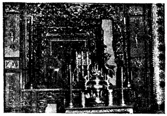

CHÙA KIẾN-AN-CUNG
Nói đến chùa xưa miếu cũ của tỉnh Sa-Đéc, cũng cần nêu lên một ngôi chùa kiến trúc theo lối cố của người Trung-Hoa: chùa Kiến-An-Cung, tục gọi chùa ông Quách.
Cũng là giống da vàng ở Á-Đông, nặng lòng sùng đạo, nặng óc tín ngưỡng, người Việt-Nam chúng ta tôn trọng đình, chùa, miếu mạo thế nào, thì người Trung-Hoa càng quí chuộng các ngôi chùa của họ thiết lập nhiều hơn thế nữa.
Kể về mặt kiến trúc, chùa Kiến-An-Cung rất qui mô to tát, uy nghi lộng lẫy, tọa lạc ngay trung tâm thành phố Sa-Đéc, day mặt ra bờ rạch Cái-Sơn. Hàng rào kiên cố bao quanh sân chùa. Cửa ngõ khang trang, sân tráng xi măng rộng lớn, làm tăng nét hùng vĩ của ngôi Tam-bảo.
SỰ TÍCH XÂY DỰNG NGÔI CHÙA


Chùa Kiến-An-Cung (tục gọi là chùa ông Quách).
Ban Phước-Kiến tỉnh Sa-Đéc gồm các vị trong ban trị sự họp lại để lo trù liệu xây cất ngôi chùa Kiến-An-Cung. Trong đó có ông Huỳnh-Thuận góp vào việc kiến tạo ngôi chùa, công cán rất dày. Ông đứng trung gian liên kết đồng bào Huê-Kiều và Việt-Nam có lòng tín ngưỡng đến ông Quách, chung đậu tiền bạc giúp cho Hội có phương tiện xây cất. Nhờ lòng sốt sắng lạc quyên của môi giới Hoa, Việt, nguyện vọng đạt thành. Trước khi khởi công, một đêm ông giáng cơ, khuyên bảo hãy cho người sang tỉnh Phước-Kiến, rước thợ về hiệp nhau kiến tạo mới nên. Vâng theo tôn ý, ban trị sự phái người làm y theo lời.
Rước được thợ xong, ông Huỳnh-Thuận đứng ra đôn đốc hưng công xây cất vào năm Giáp-Tý, qua năm Đinh-Mão làm lễ khánh thành rất trọng thể... Tính đến nay đã được nửa thế kỷ.
Nay Huỳnh-Thuận đã ra người thiên cổ, người thừa kế ông là Huỳnh-Thủy-Lê, con ông, một người có Tây học, nhưng vẫn giữ nguồn gốc tổ tiên, vững đức tin nơi Trời Phật.
Đối với ông Huỳnh-Thủy-Lê, đồng bào ở Sa-Đéc quen gọi ông là Hội-Đồng Lê, cựu nghị viên canh nông. Nhiều người có cảm tình với cách xử thế của ông. Như thân phụ ông khi xưa, ông có lòng hào hiệp, phong độ nho nhả, nhân đức hay giúp đỡ người đời.
Chúng tôi đã thân đến viếng chùa, quan chiêm khắp nơi, thầm khen phong quang tốt đẹp. Chùa cao hai nóc. Hai bên lối vô cửa chánh có hai con kỳ lân bằng đá xanh to lớn. Bên tả bên hữu có hai ông thần đứng giữ trước chùa. Vào trong thì gặp một sân lộ thiên nhỏ để dành chỗ cúng tế theo cổ tục. Những cột lớn trên chánh điện chạm trổ tinh vi, vàng son lộng lẫy, liễn chấn rực rỡ.
THẦN-LINH TÂN-PHÚ-ĐÔNG
GIÁNG CƠ CHO BIỂN LIỄN
Nhìn lên chánh điện, chúng tôi thấy tấm biển chạm bốn chữ "Phú bảo an đông, hai bên cột có đôi liễn".
"Đông thôn chúc thánh, đức thành cung hách trạc thạnh trùng tu."
"Phú-Mỹ tạ thần ân, khánh hạ nguy nga hưng miếu tự."


Trong Chánh-điện Kiến-An-Cung uy nghi lộng lẫy.
Với bộ bao-lam hai mặt, bên trong thờ ông Quãng Trạch-Tôn-Vương.
Theo lời ông Tự giữ chùa kể lại, khi dựng chùa xong, hương chức làng Tân-Phú-Đông có nhã ý tặng cho chùa một vật xứng đáng, một bộ bao-lam hai mặt biển liễn sơn son thép vàng để lưu niệm.
Quí vị hương chức có họp nhau tại chùa để cầu cơ xin chữ. Ông Thần sở tại Tân-Phú-Đông giáng cơ, dạy hương chức làng khắc mấy chữ trong biển liễn nêu trên, cúng cho chùa.
Ở đời lòng thành ắt có cảm ứng. Đấng vô hình ngự trị khắp nơi, thưởng phạt công minh. Tấm biển và đôi liễn trên đây, do thần giáng cơ, chứng minh cho người đời biết có Thần có Thánh, có Tiên có Phật, ai tin sẽ thấy.
CÁCH THỜ PHỤNG
Chính giữa thờ ông Quãng Trạch-Tôn-Vương (gọi là ông Quách), mặt đỏ hồng, chân gát lên, tay nâng đai ngọc. Hai bên có hai vị cầm ấn kiếm, tướng diện oai phong lẫm liệt, người không chánh tâm bước vô thấy phải sợ. Phía trước trần thiết trang nghiêm, mé ngoài thờ bàn Hội-Đồng, Huyền-Thiên Thượng-Đế, và ông quan Thánh-Đế-Quân, có sắp hai hàng lổ bộ sáng ngời. Cạnh bên có tây lan và đông lan để làm chỗ tiếp tân khi cúng kiến.
Trong ngoài thật khéo sắp đặt, sắc sảo, tôn nghiêm. Để trang trí cho thêm vẻ mỹ quan, nhất là cho có ý nghĩa một ngôi thiền viện, khuyên người lánh dữ làm lành, hai bên vách tường tô điểm những hình thập điện phong thần, nhiều truyện tích xưa ý vị thâm trầm. Các bức tranh, họa theo lối thủy mạc, nét họa uyển chuyển sắc bén trông thật linh động.
Theo lời ông Tự, ngôi chùa theo thợ Trung-Hoa phối hợp với nhân công người Việt chung sức xây dựng. Phần trang trí cũng do thợ khéo rước từ bên Trung quốc sang đảm nhận. Nét họa đến ngày nay đã 50 năm vẫn không phai mờ. Thật là cả một công trình nghệ thuật.
VỀ SỰ CÚNG TẾ
Hằng năm chùa có hai lễ tế: ngày 22 tháng 2 âm lịch là ngày sanh của ông. Ngày 22 tháng 8 âm lịch là ngày ông thành đạo, chùa có thiết lễ cúng tế, có lễ sanh dâng hương, hoa, trà, quả v.v...
Mỗi ba năm có thiết lập trai đàn, cúng cầu siêu cho bá tánh quá vãng và cầu cho Quốc Thới dân an. Chùa có thỉnh chư vi Đại-Đức Tăng-Ni Hoa-Việt đồng thành tâm cúng tế. Ông bà Huỳnh-Thủy-Lê tự tay mua sắm và thêu may áo mão: tì lư hiệp chưng cà sa, y hồng bá nạp hia tất đủ bộ, cất giữ tinh khiết để dành riêng cho quí vị Hòa-Thượng và kinh sư đều mặc cúng lễ trong đàn chay. Các y phục học trò lễ: mão, áo, cũng, hia, tất cả màu sắc rực rỡ, đặc biệt là có các Nữ lễ sanh dâng lễ, tướng đi yểu điệu, bộ tịch gọn gàn, uyển chuyển, trang nghiêm...
Trầm hương nghi ngút, dân chúng đến chiêm bái trong 6 ngày lễ, quan khách đến dự ra vào tấp nập.
Nhứt là giới Hoa-Kiều túc trực dâng hương cúng kiến rất thành tâm.
Chẳng những dâng lễ cúng tế người khuất mặt, sau đàn chay có ra giàn thí thực. Trên giàn cao có chư thiện tín đem dâng cúng nhiều cổ bánh, trái cây thực phẩm chưng bày rất đẹp. Sau khi cúng xong thì hiến dâng bá tánh. Ban trị sự cũng lo về mặt cứu tế xã hội, có tặng gạo cho những người nghèo. Âu cũng là một điều công quả đáng tán dương.
BAN TRỊ SỰ CHÙA KIẾN-AN-CUNG
Hội chùa này từ ngày ông Huỳnh-Thuận quá vãng, ông Huỳnh-Thủy-Lê nối tiếp lo gìn giữ luôn đến ngày nay. Với nhiệm vụ chánh tổng lý trong chùa, ông Huỳnh-Thủy-Lê được công cử nhiều khóa, tích cực phục vụ, mọi người đều tín nhiệm quí mến. Tiếp sức với ông gồm có 19 người trong ban trị sự, đông đủ các giới Hoa-Kiều bang Phước-Kiến chung lo bảo vệ ngôi chùa.
Đồng bào dân chúng Sa-Giang hết lòng tin tưởng nơi oai linh ông Quách. Nhất là gia đình ông Huỳnh-Thủy-Lê hoàn toàn đặt lòng tin tưởng vào đấng thiêng liêng hộ trì tế độ.


Ông Quãng Trạch-Tôn-Vương ngự giữa phương trượng.
Chúng tôi trung thực ghi chép những điều mắt thấy tai nghe về ngôi chùa Kiến-An-Cung tức chùa ông Quách, hầu cho đầy đủ những điều sưu khảo về Sa-Đéc xưa và nay.
VỊNH CHÙA ÔNG QUÁCH
Nền cổ kính văn minh Trung-Quốc
Từ nghìn xưa lăng miếu lưu truyền
Tôn nghiêm thần thánh diệu huyền
Chuẩn thằng qui củ mối giềng nho phong
Kiến-An-Cung uy nghi xinh xắn
Trải biết bao mưa nắng phủ phàng
Vẫn tươi đậm nét son vàng
Để tô điểm đẹp thị thành Sa-Giang
Là người trí, kính thần trọng thánh
Cầu giúp cho nẻo chánh mà đi
Lòng thành sẽ có thần kỳ
Chứng minh phò hộ việc gì cũng nên
Quách Quãng-Trạch vang rền linh hiển
Cứu độ đời nhiều chuyện huyền vi
Kính dâng ngài ít vần thi
Để làm kỷ niệm chứng tri lòng thành
Huỳnh-Minh
CHÙA BÀ
Ngôi chùa Bà có trên 100 năm qua, tọa lạc tai Châu-Thành Sa-Đéc, gần chùa ông Quách. Chùa này do hội Phước-Kiến sáng lập.
Bên trong thờ bà Thiên-Hậu Ngươn-Quân, sắc phong đời nhà Hán ở Trung-Hoa là Thiên-Hậu Thánh-Mẫu hộ quốc tế dân. Vi bà có công cứu độ những người đi ghe thuyền ngoài biển bị sóng gió đánh chìm. Tưởng niệm đến danh hiệu bà thì được bà hộ trì tai qua nạn khỏi. Vì thế, người Trung-Hoa rất tôn sùng bà như vị cứu tinh của họ. Khi đến Việt-Nam sinh cơ lập nghiệp, họ chung đậu tiền của để xây dựng ngôi chùa thờ bà.
Ở Sài-Gòn, Chợ-Lớn và các tỉnh trong nam, tỉnh nào cũng có ngôi chùa Bà. Đặc biệt là ngôi chùa Bà ở Sa-Đéc ngày nay. Các vật thờ trong chùa rất xưa và quí giá, trên một thế kỷ nay vẫn còn nguyên vẹn. Mặc dầu trải qua bao cơn khói lửa tang thương, nhưng ngôi chùa được bình yên, không hề xảy ra điều gì cả.
Mỗi năm, ban Trị-Sự hội có làm lễ cúng hai lần vào ngày 23 tháng 2 và mùng 9 tháng 9 âm lịch. Lệ cúng heo, gà, vịt.
Ngôi chùa trên đây là trung tâm tín ngưỡng của giới Huê-Kiều thường tới lui xin xâm, lễ bái, hết lòng trọng vọng, coi bà là một vị thần hộ mạng.
CHÙA HƯƠNG
Chùa Hương là một chùa cổ kính khang trang lộng lẫy, thờ phượng rất uy nghi, tọa lạc tại Châu-Thành Sa-Đéc ngày nay. Chùa này trước tiên do hội Minh-Hương ở Sa-Đéc đứng ra sáng lập trên một thế kỷ.
Chùa thờ Quan-Thánh-Đế-Quân. Trước đây, chùa ở vào khu đất đường Trưng-Nữ-Vương (hiện nay là cư-xá công-chức) đến năm 1872, ngôi chùa được dời lại đường Nguyễn-Tri-Phương.
Thời gian sau, ngôi chùa này được đồng bào Hoa-Việt trùng tu lại đầy đủ tiện nghi hơn để thờ Phật, vẫn để hiệu cũ chùa Minh-Hương.
Ngày vía, rầm lớn, ngày Tết Nguyên-Đán được đông đảo dân chúng đến dâng hương lễ bái, sùng kính Phật Trời.
Đây là một di tích của người Minh-Hương đến Sa-Đéc sanh cơ lập nghiệp, dựng ngôi chùa này, nay còn gốc hai chữ chùa Hương.
ĐÌNH THẦN TÂN-PHÚ-TRUNG
Khắp nẻo đường đất nước, ngôi tam bảo và Đình Thần đâu đâu cũng có, nói lên sắc thái tín ngưỡng của dân Việt. Tại Sa-Đéc, ngôi Đình đáng kể là Đình Thần Tân-Phú-Trung. Ngôi Đình này xây dựng đã trên một thế kỷ, thờ vị thần Quãng chánh trực, sắc chỉ do vua Tự-Đức phong tặng. Phía trước thờ Quan-Thánh-Đế-Quân.
Đình Thần Tân-Phú-Trung tọa lạc trên khu đất rộng. Cảnh vật thanh u huyền diệu. Đối diện ngôi đình là con rạch Cần-Thơ giăng trước mặt, xuôi dòng từ sông Sa-Đéc rẽ qua bến nước Bình-Tiên, xuyên qua ngọn Trại-Quán, đến chợ Tân-Phú-Trung. Hai bên nhà cửa ruộng vườn giăng-giăng, dân cư đông đảo. Ở vùng này, phần đông là tín đồ Phật-giáo Hòa-Hảo.
Tại chợ Bình-Tiên có dựng lên một độc Giảng-đường trên thờ Đức Thầy Huỳnh-Giáo-Chủ và trụ sở Phật-Giáo Hòa-Hảo. Về đời sống đồng bào ở đây, nhà nào cũng khá giả.
Ngay địa điểm ngôi đình, từ rạch Cần-Thơ lại, phân nhánh qua các ngã Cai-Trượng, kinh Mương-Khai, thẳng qua Cần-Thơ, Bà Gọ và xuôi kinh Đốc-Phủ Hiền Sa-Đéc.
Đến viếng ngôi Đình Tân-Phú-Trung cổ kính, chúng tôi chiêm ngưỡng với tất cả lòng thành. Đình thật nguy nga lộng lẫy. Trước sân, nền tráng xi-măng rộng rãi, có hàng rào xinh đẹp. Ngắm nhìn chung quanh có những bồn cỏ hoa sặc sỡ, những cây dương cổ thụ soi tàn ngã ngọn rất nên thơ. Chim chóc bay về líu lo trên cành, gợi nên cảnh cũ người xưa. Mặc dù đất nước trải qua trên 20 năm tang tốc, nhưng ngôi đình vẫn được nguyên vẹn là việc ít có.
Theo các bô lão địa phương kể lại, ngôi đình này đã tu bổ nhiều lượt, và cũng trải qua nhiều vị góp công chấn chỉnh, phục vụ. Nay kẻ còn người mất. Năm 1941, đình trùng tu lại một cách khang trang, vẫn cất theo lối cũ, bên trong trang trí rực rỡ. Đồng bào quanh vùng hết lòng sùng kính.
SỰ LINH HIỂN CỦA LINH THẦN
Năm 1945 đến 1948, đất nước nhuộm màu tang thương khói lửa. Lúc bấy giờ, có một số người kéo đến định thiêu hủy ngôi Đình này. Nhưng mấy lần toan đốt đều không cháy, kết cuộc khiến họ bỏ qua ý định xúc phạm đấng thiêng liêng. Âu cũng có bàn tay vô hình dập tắt lửa vô tri, che chở cho ngôi đình nguyên vẹn. Phải chăng nhờ sự hiển linh của thần nhân hộ trì, khiến cho dân chúng trong làng càng thêm tin tưởng. Nên đâu đó đều được bình yên, nhang khói hương lễ tạ linh thần. Hiện nay, nói đến Đình Thần Tân-Phú-Trung, đồng bào Sa-Đéc đều công nhận khá linh thiêng. Từ đó đến nay, hương chức làng vẫn liên tục phụng thờ một cách chu đáo.
Hằng năm có hai lần xuân, thu quí tế. Ba năm đáo lệ một kỳ, có bày cuộc hát dâng hiến linh thần thưởng thức. Bá tánh tham dự đông đảo. Toàn tỉnh Sa-Đéc cũng còn nhiều ngôi đình xưa có tiếng như:
1. Đình Tân-Dương
2. Đình Cái-Tàu-Hạ
3. Đình Đất-Sét
4. Đình Long-Hưng
5. Đình Tân-Qui-Đông
6. Đình Vĩnh-Phước
7. Đình Long-Hậu
8. Đình Tân-Hưng
9. Đình Tân-Phú-Đông
Đó là những ngôi đình đã trải bao tuế nguyệt phong sương, từ 100 năm đến 200 năm. Vì thời cuộc, có ngôi bị hư hại không còn nguyên vẹn như thuở nào.
Chúng tôi nhắc lại với tinh thần tồn cổ, nhớ đến công nghiệp người xưa có công ân với đất nước nên mới được phong thần, anh linh bảo vệ dân chúng.